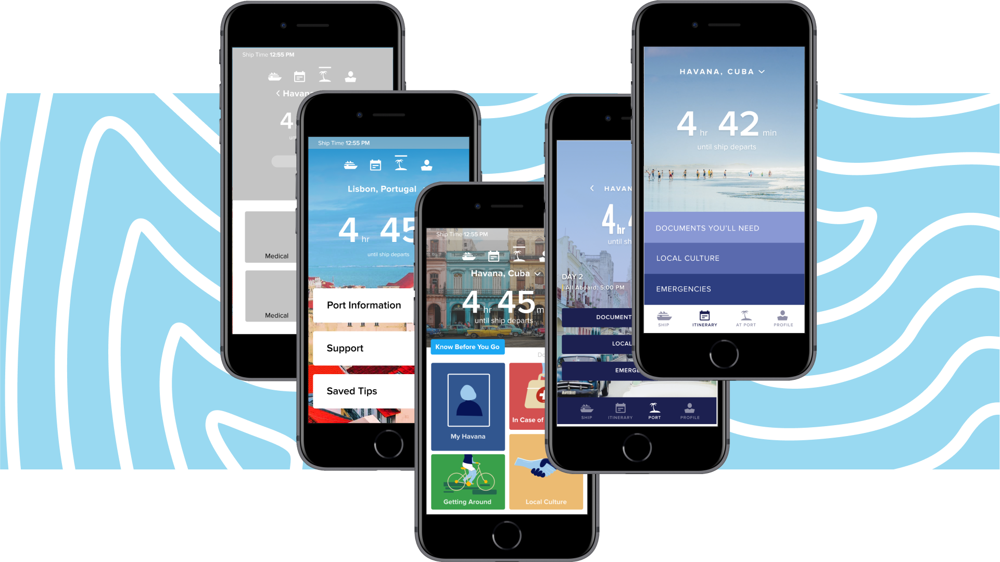

Hello, I'm Stephen Therriault

Welcome to my portfolio! I'm an interaction designer who does UX strategy, Motiongraphics, and Video production. Currently seeking work opportunities. Want to get in touch?
V
UX - MOTION

Haven Mobile App
Helping young people understand their support systems, communities, and identities by safely guiding their coming out journey.
VIDEO - UX - MOTION
At Port Mobile Extension
Soothing travel Anxiety for Royal Caribbean passengers by designing for worst case scenarios when exploring port destinations.
VIDEO - SOUND

James Hart Documentary Interview
Interviewing Haida carver chief James hart to understand the rough but passionate teachers who came before him.
MOTION - VIDEO - SOUND
Motiongraphics Reel
A collection of motion work from personal, academic, and professional projects. Thank you for watching.